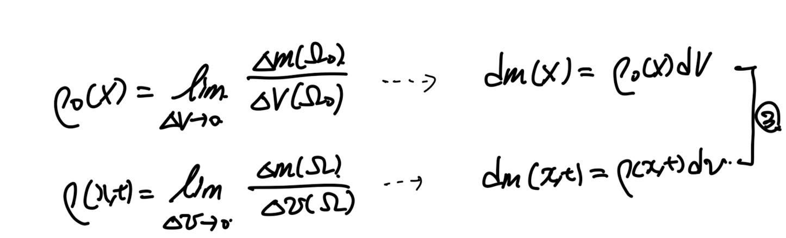
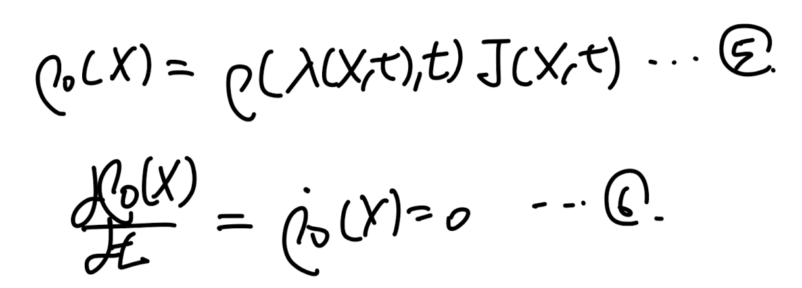
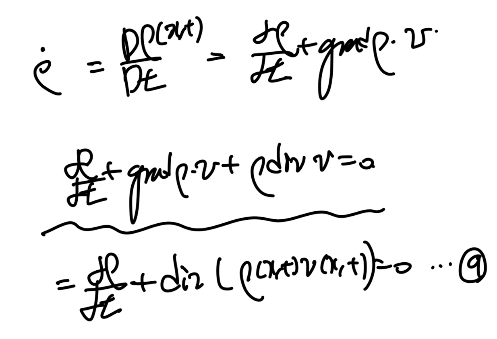
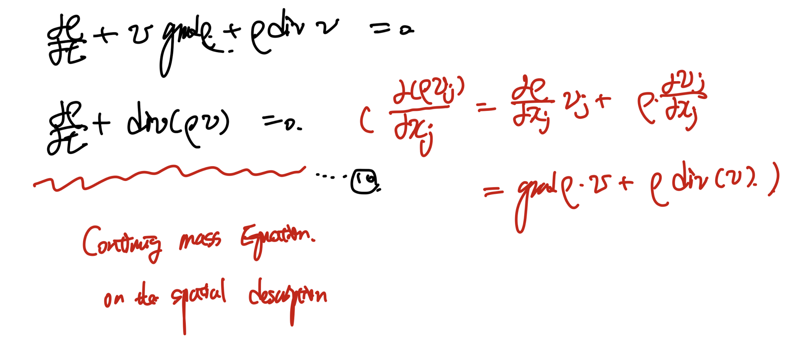
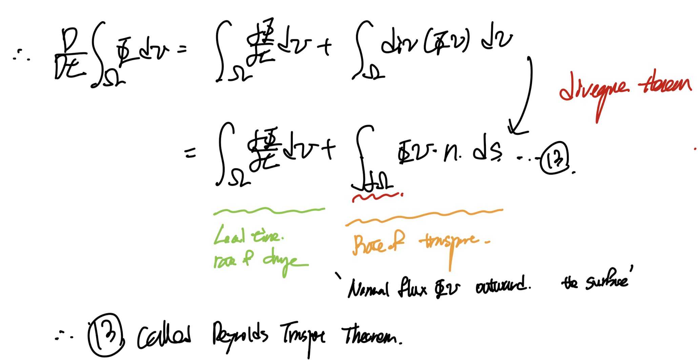
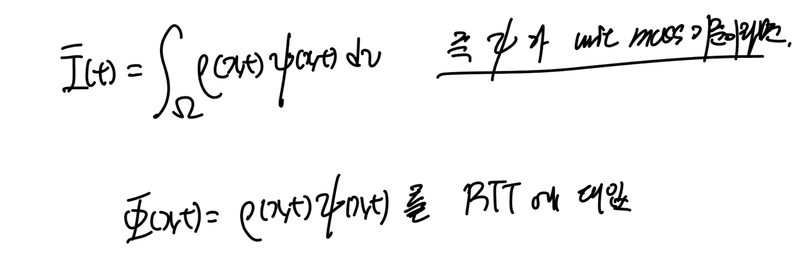

Ch4 Balance principles - part1 (mass balance and RTT)
지금까지
정리한 모든 stress, deformation, motion을 정의한 이유는
바로 balance prinicple 을 이용하여
결국, 방정식을 세우기 위함이다.
이번 쳅터에서는
mass balance,
Linear momentum balance
Angular momentum balance
Energy balance
4개의 balance식들을 모두 정리해보자.
+ 정리하기 위해서 너무나도 중요한 Reynolds Transport Theorem도
중간에 추가.
4.1 Mass balacne
먼저 사진에서 어떠한 closed system을 기준으로 먼저 살펴보자.
closed system의 경우 mass, energy transfer이 존재하지 않는다.
똑같이 시간에 따라서 변형한다고 가정하자.

시간이 지나더라도, 변형 전후 전체 domain의 질량은 보존된다
즉, 시간에 따라 질량 일정하므로 2번식이 유도된다.
전체 domain중 한점 A를 기준으로 보았을때도,
질량은 보존되므로 1번식이 성립함을 알 수 있다.

질량보존이라는 개념을 인지하고, 부피를 우리가 변형전후 dV -> dv로 설정을 하면
변형 전후 밀도의 관계식을 3번과 같이 유도할 수 있다.

여기서 짚고 넘어갈 2가지 key point가 존재한다.
density는 scalar function이라는 것.
그리고 초기 density는 t = 0 에서의 값이므로,
time independent(시간과 무관)하다는 것을 기억하자.

Grad(density) = 0 인 경우, 즉 공간변화에 따라서 density가 전체 domain에 걸쳐 일정하면
그 continuum body는 homogeneous 하다라고 한다.
1번식에서 정의한 미소 점에서의 질량 보존식과
부피변화는 Jacobian으로 끊임없이 이전 쳅터에서 증명해온 것을 이용하자.
최종적으로 4번식이 도출되고,
이를 X즉 Lagrangian positino vector로 만 표현하면 5번과 같다.

dv. = J dV , 꼭 기억하자.
여기서 우리는 시간에 따라 미분을 진행할 것이다.
그전에 맨처음에 언급하였던,
ρo(X)는 시간과 independent하나는 사실을
이요하면 time에 따라 변하지 않고 일정함을 알 수 있다.

여기서 시간 미분은
ch2에서 너무나도 강조하였던,
Material time derivative임을 잊지말자.
(X를 고정하고, t에 따라 미분 -> Material time derivative, D()/Dt)
그대로6번식에 5번식을 대입해주자.
정리하면 7번식이 도출된다.
즉, 초기 밀도가 시간에 따라 변하지 않는다는 방정식을
변형후 밀도의 함수로 변형하였다.
이후 J(dot) = J div v 임을 이용하자(ch2에서 증명 완료)

8번식은 그냥 정말 ch4각 balance eq에서 안나온 적이 없으므로 꼭 기억하자.
여기서 D
ρ/Dt 를 우리가 전개해보면, Material time derivative
9번식이 도출된다. (div 가 합쳐짐)

9번식은 유체역학 시간에 배운 Continutiy eq이다.
항상 합쳐지는 것은 햇갈리므로,
햇갈릴때는 index notaiton으로 표현하면 끝난다.

맨처음 configuration을 정의할때, 잘 기억하면 closed system이라 가정하고 시작하였다.
그렇지만, 여기서 우리는 유도한 10번 방정식을 open systm
mass, energy가 flow하는 system에도 적용시킬 수 있다.
( dm0 =dm1 , dv = J dV 은 그대로 성립하기 때문이다)

이렇게 mass가 flow 하는 상황에서 우리는 divergence theorem을 10번 식에 적용시킬 수 있다.

(8번식은 꼭 기억하자)

안나올수가 없는 식이다.
4.2 Reynolds Transport Theorem
지금부터는 어떠한 scalar quantity가 body에 존재할때,
Material time derivative of that quantity를
Lagrangian(기존 위치벡터 기준)
Eulerian(변형후 위치벡터 기준)
두 서로 다른 관점으로 전환시켜주는 방식을 찾아보자.
그 방식이 Reynolds Transport Theorem
왜 서로 다른 관점을 바꾸어야 하는가? 라는 질문을 한다면,
이후에 equations들을 유도하는 과정에서 자연스럽게 알게 될 것이다.

가장먼저 scalar field function을 정의하자, 연속, 미분가능하다고 가정하자.
전체 domain의 스칼라값을 구하고 싶으면,
전체 domain에 걸쳐 scalar function을 적분을 진행시켜주면 된다.

scalar function - per unit volume
여기서 아주 중요한 time derivative 항을 적분안으로 짚어 넣기 위해서,
region을 시간에 따라 변하지 않는 reference region으로 변환시켜준다.
변환시켜 주기위해서는 dv -> dV로 전환시켜줘야 하고,
이는 Jacobian으로 쉽게 가능하다.

자 이제 time independent domain에 대해서
적분을 진행하기 때문에,
material time derivative을 적분 안으로 짚어 넣을 수 있다.

짚어 넣은 후에, DJ/Dt = J dot = J div v 을 이용한 후에,
다시 원래 integral domain즉
변형후 domain으로 전환시켜준다.
(쉽게 생각하면, 미분항을 짚어 넣기 위해서 잠시만,
integral region을 변형전 region으로 갔다 온 것)
그렇게 나온 식이 바로 11번 식이다.
이후에 11번식은 그냥 아까 언급한 8번식 같은 식이다. 꼭 기억하자.

Material time derivative의 정의자체는 X를 고정하고, t에 대해서
미분하는 것은 계속해서 언급하였다.
이를 이용하여, material time derivative를 전개해주면,
또 우리는 divergence를 합칠수가 있다 -> 12번식 도출
이후에 divergence theorem을 이요하여, surface integral로 전환이 가능하고,
13번식을 도출 할 수 있다. 13번식이 바로 Reynolds Transport Eq, Theorem이라고 불린다.

13번식이 어떤 의미를 함축하고 있는지를 차근차근 살펴보자.
좌항은 Material time derivative of
변형후 전체 region의 scalar Function
값이다.
우항1은 순수히 time에 의해서만 변하는 scalar function 의 rate of change
우항2는 시간에 따라 변형하고 움직이는 particle들에 의해서 transport되는 전체 scalar값을 의미한다.
좌항은 Lagrangian 관점에서 시간 미분항을 계산하 것이고(변형을 따라가면서)
우항1은 Eulerian 관점에서 시간 미분항을 계산한 것이다(고정된 x좌표에서 시간 미분항 계산)
두 항의 차이는 시간에 따라 움직이는 particle들이 가지고 있는 scalar function값으로부터 도출된다.
그리고 그 값들을 계산하는 방법은 flux를 계산하는 것이다.
(이 부분은 정말 학부때부터 계속해서 들었지만, 이해하기 굉장히 어려운 내용같습니다...)
자 지금까지 우리는 scalar function이 per unit volume이라고 정의하였지만,
per unit mass를 관찰하기 위해서 density항을 추가해주자.
(간단하다 기존 scalar function = density. * new function)을 대입하면 된다.

12번 식에 대입해주고, divergence를 쪼개주면
우리가 Material time derivative로 묶는 항이 도출된다.

이후에 scalar function으로 묶게 되면, 8번식 continutiy eq이 도출되어
0으로 사라짐을 알 수 있다.

Reynolds transport Theorem of scalar function per unit mass
꼭 기억하자.